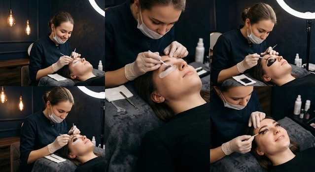

Полная программа: 14 модулей. От рынка и анатомии до аттестации, брендов красителей, PRO-категорий и чек-листа закупок (31 позиция).
Содержание
Блок 0
Цель: студент понимает структуру рынка, видит карьерную траекторию, знает реалистичные цифры дохода и владеет инструментами поиска первых клиентов.
| Уровень | Опыт | Услуги | Средний чек | Месячный доход |
|---|---|---|---|---|
| Новичок | 0–3 мес. | Оформление (окрашивание + коррекция) | 800–1 200 ₽ | 20 000–40 000 ₽ |
| Практикующий | 3–12 мес. | Оформление, ламинирование, уход | 1 200–2 000 ₽ | 50 000–80 000 ₽ |
| Топ-мастер | 1–3 года | Полный спектр, мужские / подростковые, осветление | 2 000–3 500 ₽ | 90 000–130 000+ ₽ |
| Преподаватель | 3+ лет | Обучение, наставничество, курсы | 3 500–15 000 ₽ | 150 000+ ₽ |
Блок 0 · Форматы обучения
Интенсив
Базовая теория + 2 модели
Базовая теория и отработка на 2 моделях.
Стандарт
Полная теория + 4–6 моделей
Полная теория и 6-этапная система отработок на 4–6 моделях.
Расширенный PRO
Стандарт + бизнес + PRO
Всё из Стандарта + бизнес, особые категории, осветление, аттестация с портфолио.
Блок 1
Цель: безошибочно определять тип кожи, подбирать подготовку, понимать фазы роста и базу колористики под цветотип.
1.1
Жирная / сухая / нормальная. Себум — ключ к стойкости. Обезжиривание, увлажнение, тоник.
1.2–1.3
Кутикула · кортекс · медулла. Анаген / катаген / телоген — почему часть волосков выпадает через 1–2 недели.
1.4
Цветотипы, круг Иттена, нейтрализация, УГТ 1–10, PPD и оксиды 1.8–3%.
Блок 2
Цель: рабочее место по СанПиН, полный цикл обработки инструментов, протокол аллергопроб.
Раствор (Оптимакс / Аламинол и др.), инструмент полностью погружён, ~15 мин
Предстерилизационная очистка щёткой — без ПСО стерилизация неэффективна
Крафт-пакет + сухожар 180°C / 60 мин или автоклав 134°C / 5 мин
За 24–48 ч на сгибе локтя / за ухом; аптечка и протокол первой помощи
Дез до/после клиента, одноразовые расходники, вскрытие пакета при клиенте
Перчатки не обязательны по СанПиН на неповреждённой коже — но желательны для защиты рук и сервиса
Блок 3
Цель: геометрически корректная разметка под любой тип лица и предсказуемое окрашивание.
Точка 1
От крыла носа вертикально вверх
Точка 2
Через центр зрачка
Точка 3
Через внешний уголок глаза

Бренды
Цель: ориентироваться в брендах красителей, хны, ламинирования и осветления — от бюджетного старта до премиум-линеек.
Растворители / оксиды
Loca Remuver, Estel Remuver, оксиды 1.8% и 3% для разных типов кожи и желаемого результата.
Хна / биотатуаж
Brow Xenna, SHIK, Thuya — заваривание, послойная техника, графичный результат.
Санитария
Оптимакс Проф, Аламинол, Чистодез, Эстилодез, Трилокс — дезинфекция инструментов и кистей.
Блок 4
Цель: коррекция воском и пинцетом без повреждения кожи, тридинг, безопасная долговременная укладка.
Коррекция
Укладка
Блок 5
Цель: подбирать уход, комбинировать с окрашиванием и ламинированием, повышать средний чек.
| Параметр | Ламинирование | Ботокс |
|---|---|---|
| Цель | Направление и фиксация формы | Восстановление и питание |
| Химия | Тиогликолят (связи) | Кератин, коллаген, ГК, масла |
| Эффект | Послушные, уложенные | Блеск, плотность, наполнение |
| Агрессивность | Высокая | Низкая |
SPA
Зелёная маска, ~90% растительных компонентов
Сыворотка
Уход, объём, можно вместо 3-го состава
Кератин
Низкомолекулярный кератин в кортексе
Блок 6
Цель: искать клиентов системно, оформлять профиль, понимать контент и легализацию.
Окружение, Avito, hh.ru, соцсети, кросс-промо, блогеры
75% экспертный и вовлекающий · 25% продающий
Онлайн-запись, база, SMS / Telegram-напоминания
Самозанятость / ИП, схемы обучения и сертификатов
Блок 7
Цель: полный цикл от бумаги до самостоятельной модели без страха ошибки.
10+ фейс-чартов, симметрия, золотое сечение · 4–6 ч
Показ педагога на 1–2 моделях · 2–3 ч
1–2 модели, рука преподавателя рядом
2–4 модели, макро «до/после» на разбор
Полный цикл от консультации до ухода
Блок 8
Цель: подтвердить квалификацию на модели и защитить портфолио из 5 кейсов.
Чек-лист оценки
8.2
Блок 9
Цель: адаптировать технику под мужские, подростковые брови и сложные случаи (шрамы, старый татуаж).
9.1
9.2
9.3
Блок 10
Цель: мягкое осветление на 1–2 тона с нейтрализацией желтизны и обязательным восстановлением.
10.1
10.2
Приложение
14 модулей, 6 этапов практики, 14 брендов красителей, 31 позиция в чек-листе закупок. Структура финального курса без изменений.